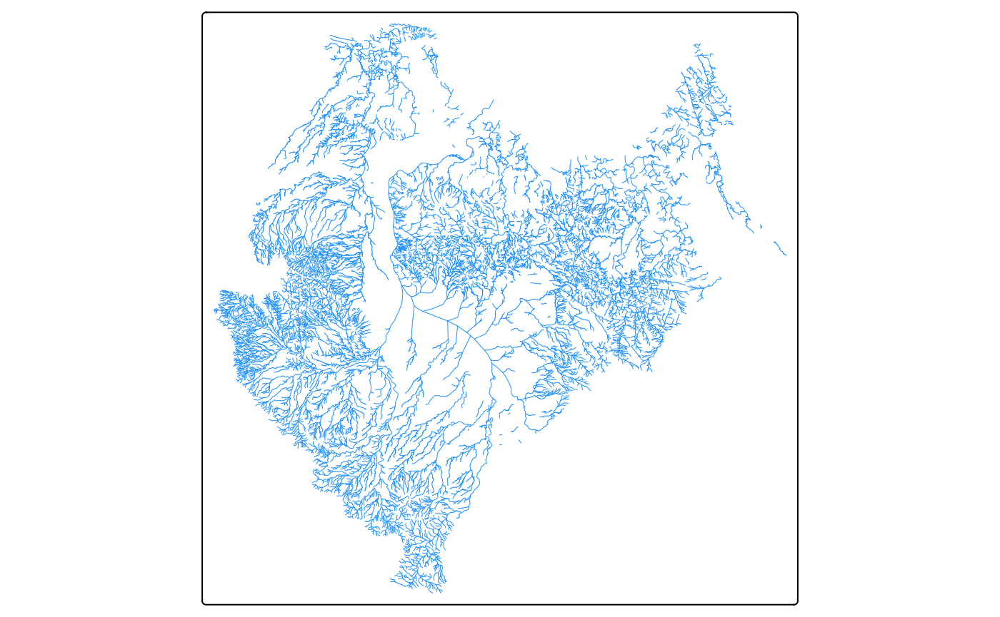
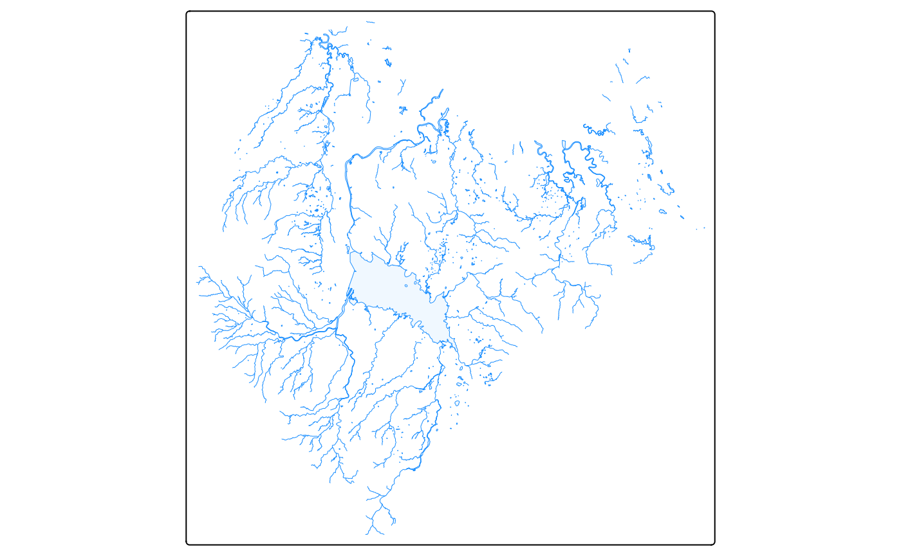
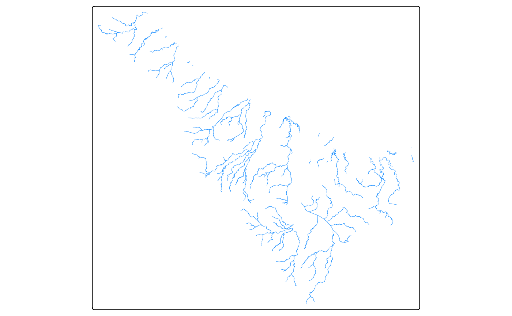
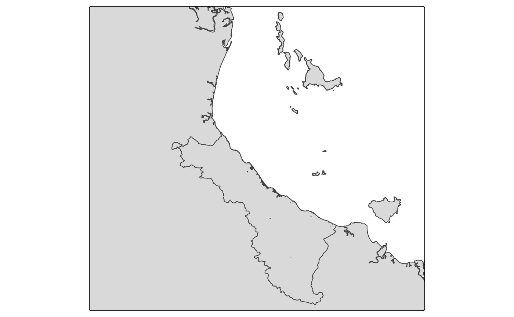

Creating Maps
Mapping.RmdIntroduction
Maps are a commonly required feature across all Regional Report Cards. Equally, analysis often happens in R across each of the Regional Report Cards. It stands to reason that creating maps in R is both a logical and efficent thing to do. However, maps made in R face a few reoccuring issues:
- Styling: creating a nicely styled map in R is time consuming and not easy
- Repetition: maps are often created across several analysis workflows and thus code is repeated (yuck)
- Difficulty: creating maps in R is nowhere near as easy as GIS programs with a GUI
- Choice: there are a range of packages use to create maps
To help address some of these issues, two mapping functions have been made:
- maps_water_layer()
- maps_inset_layer()
These functions have been designed to be as generic as possible, whilst also removing as much repeatable code as possible. The goal is to allow the user to focus on adding the specific dataset for the map, and styling the map how they want. The functions use the Tmap package. This package is one of the most popular and easily understood mapping packages, it handles a wide range of data (such as eReefs) and provides interactive options easily.
Maps Water Layer
The maps_water_layer() function does exactly as it says, and creates a water layer for your map. Specifically, it creates a rivers, creeks, and lakes layer for your map. The output from this function can be added to any map to instantly improve the “base” of the map. In its most simple form, the function only requires you to provide a basin name that exists within Queensland:
#create the water layer
my_water_layer <- maps_water_layer("Ross")
#> Registered S3 method overwritten by 'jsonify':
#> method from
#> print.json jsonlite
#> [working] (0 + 0) -> 6 -> 1 | ■■■■■ 14%
#> [working] (0 + 0) -> 5 -> 2 | ■■■■■■■■■■ 29%
#> [working] (0 + 0) -> 1 -> 6 | ■■■■■■■■■■■■■■■■■■■■■■■■■■■ 86%
#> [working] (0 + 0) -> 0 -> 7 | ■■■■■■■■■■■■■■■■■■■■■■■■■■■■■■■ 100%
#visualise
my_water_layer
If you spell a basin wrong, or provide an incorrect basin, the function will warn you and give a list to choose from:
#create the water layer
my_water_layer <- maps_water_layer("Fake")
#> Error in `extract_watercourses()`:
#> ! The following basin argument(s) are invalid: 'Fake'. Try one of: Brisbane, Burdekin, Balonne-Condamine, Coleman, Barron, Mary, Burnett, Holroyd, Noosa, Don, Border Rivers, Pine, Ross, Murray, Archer, Paroo, Logan-Albert, Wenlock, Mitchell, Cooper Creek, Normanby, Haughton, South Coast, Diamantina, Fitzroy, Tully, Herbert, Mulgrave-Russell, Burrum, Bulloo, Whitsunday Island, Proserpine, Georgina, Endeavour, Embley, Lockhart, Black, Maroochy, Kolan, Boyne, Waterpark, Calliope, Gilbert, Baffle, Staaten, Johnstone, Moonie, Settlement, Mornington Island, Fraser Island, Curtis Island, Flinders, Jeannie, Olive-Pascoe, Ducie, Daintree, Mossman, Arafura Sea, Jardine, Nicholson, Warrego, Morning, Leichhardt, Norman, Watson, O'Connell, Jacky Jacky, Pioneer, Coral Sea, Stewart, Moreton Bay Islands, Plane, Hinchinbrook Island, Shoalwater, Styx, Torres Strait IslandsThe function does get more complex, here is an example that provides all arguments:
my_water_layer <- maps_water_layer("Ross", WaterLines = TRUE, WaterAreas = TRUE, WaterLakes = TRUE, StreamOrder = 2)
#> [working] (0 + 0) -> 1 -> 1 | ■■■■■■■■■■■■■■■■ 50%
#> [working] (0 + 0) -> 0 -> 2 | ■■■■■■■■■■■■■■■■■■■■■■■■■■■■■■■ 100%
my_water_layer
In the case of the second map we have:
- asked for water lines (i.e. rivers, and creeks) - this defaults to TRUE
- asked for water areas (i.e. unnamed waterbodies such as wetlands) - this defaults to FALSE
- asked for water lakes (i.e. Ross Dam) - this defaults to FALSE
- specified the strahler stream order for water lines (we want streamorder 2 or bigger)
Finally, a third variation would be:
my_water_layer <- maps_water_layer(c("Ross", "Black"), WaterLines = TRUE, StreamOrder = c(3,5))
#> [working] (0 + 0) -> 1 -> 1 | ■■■■■■■■■■■■■■■■ 50%
#> [working] (0 + 0) -> 0 -> 2 | ■■■■■■■■■■■■■■■■■■■■■■■■■■■■■■■ 100%
my_water_layer
Note that in this case we have provided multiple basins and also specified both a min and max strahler stream order.
In all cases, the output of the function can then be passed into your wider tmap mapping call.
Maps Inset Layer
The maps_inset_layer() is exclusively for maps that you want to save to file. This function helps to smooth over the annoyingly tricky process of creating a inset map in the upper right corner of your main map. Inset maps are often needed to provided additional spatial context for where your main map is - particularly if your main map is quite zoomed in.
The function requires a few mandatory inputs, and has some optional extras. Mandoratory inputs are:
- An sf object that defines the focus of the main map
- A background sf object
- An aspect ratio
Where, the sf object that defines the focus of the main map would be, for example, a series of water quality sampling sites in the Ross Basin. While the background sf object could be an outline of the Ross Basin itself, or an outline of the entire Dry Tropics region, etc.
Using this function requires a bit more work than the first function:
First you need to run the function with the required arguments:
#create an example background object
black_basin <- system.file("extdata/black.gpkg", package = "RcTools")
black_basin <- sf::st_read(black_basin)
#> Reading layer `black' from data source
#> `/home/runner/work/_temp/Library/RcTools/extdata/black.gpkg'
#> using driver `GPKG'
#> Simple feature collection with 1 feature and 0 fields
#> Geometry type: MULTIPOLYGON
#> Dimension: XY
#> Bounding box: xmin: 146.1444 ymin: -19.43266 xmax: 146.6946 ymax: -18.53782
#> Geodetic CRS: GDA2020
#create example wq sites
wq_sites <- data.frame(
Site = c(1,2,3),
Lat = c(-18.89483, -18.81886, -18.79427),
Long = c(146.2215, 146.6117, 146.6336)) |>
sf::st_as_sf(coords = c("Long", "Lat"), crs = sf::st_crs(black_basin))
#run the function
my_inset_objects <- maps_inset_layer(wq_sites, black_basin, 1.1)The function returns a list of length 2. The two items in the list are:
- Inset Map
- Inset Viewport Positioning
To use thse two items, you then need to create a map that the inset map will sit within, which looks as follows:
my_main_map <- tm_shape(qld) +
tm_polygons() +
tm_shape(black_basin, is.main = TRUE) +
tm_polygons() +
tm_layout(asp = 1.1) #note to make the aspect of the main map the same as your inset map
my_main_map
Then, when you go to save this main map, you can input the two items from the inset mapping function into the tmap saving function
#save the map
tmap_save(my_main_map, insets_tm = my_inset_objects[[1]], insets_vp = my_inset_objects[[2]])If you wish to extent the function, the following options/alternatives are provided:
- you can either use a bounding box to define your area of interest, or use the original spatial object
- you can change the outline colour of the area of interest
- you can supply a second area of interest, and also customise it the same way (box/outline, and colour)
- you can change the colour of the background object